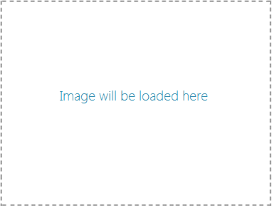

Share Source Sample
Input
Set Data Package to share
Metadata: Enter a title for what you're sharing
Metadata: Enter a description for what you're sharing
Data Package text: Enter the actual text you would like to share
Next, set it for sharing
Metadata: Enter a title for what you're sharing
Metadata: Enter a description for what you're sharing
Enter the link you would like to share
Next, set it for sharing
Metadata: Enter a title for what you're sharing
Metadata: Enter a description for what you're sharing
Select the image you would like to share

Next, set it for sharing
Metadata: Enter a title for what you're sharing
Metadata: Enter a description for what you're sharing
Select files you would like to share
No files selected.
Next, set the files for sharing
Sometimes you may want provide content in a different format or size for sharing. However, you may not want to do the work to prepare content for sharing until the target app actually requests it. In such cases, you should use delayed rendering.
To demonstrate, please choose an image to be shared. When data is requested by the target app, the image will be resized by the source app. Since image manipulation may take some time, the image processing is deferred until it's requested by the target app.
Next, set the files for sharing
You can share content in HTML markup format and preserve images.
Metadata: Enter a title for what you're sharing
Metadata: Enter a description for what you're sharing
Content: The following is an HTML fragment containing a locally-referenced image.

Go to the new Windows Dev Center to get the Windows 8 Developer Preview, dev tools, samples, forums, docs and other resources to start building on Windows 8 now.
Downloads | Getting started | App samples | ForumsNext, set the above HTML fragment for sharing
Data in custom formats can be shared with target applications that support them. In this example, we share data about a book in JSON microdata format. A supported target app, such as the Share Target sample, must be installed in order to have a place to send the data.
Metadata: Enter a title for what you're sharing
Metadata: Enter a description for what you're sharing
Custom data format name
Custom data:
var book = {
"type" : "http://schema.org/Book",
"properties" :
{
"image" : "http://sourceurl.com/catcher-in-the-rye-book-cover.jpg",
"name" : "The Catcher in the Rye",
"bookFormat" : "http://schema.org/Paperback",
"author" : "http://sourceurl.com/author/jd_salinger.html",
"numberOfPages" : 224,
"publisher" : "Little, Brown, and Company",
"datePublished" : "1991-05-01",
"inLanguage" : "English",
"isbn" : "0316769487"
};
};
Next, set the custom data for sharing
If the user tries to share when your app is not able to support share, you can provide a failure message that will be displayed in the share pane. This message should help the user understand why they cannot share and what they need to do to complete their task. You do not need to use this message if your app never supports share. Windows provides a default message for that case.
Choose the failure display text
Next, set the failure display text